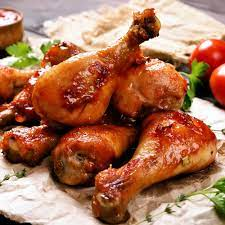

CHICKEN GHEE ROAST

For the masala:
- Chillies
- Whole spices
- Garlic cloves
- Tamarind paste
For the ghee roast:
- Chicken
- Ghee
- Sugar
- Curry leaves
- Coriander
How to make:
- Add peppercorn, coriander seeds, cumin seeds and fenugreek seeds to a frying pan. Dry roast on medium flame for 2-3 minutes or until the raw smell goes. Transfer to a plate. Add kashmiri and byadgi dry red chillies and dry roast for 2-3 minutes. Remember to stir continuously. Do not burn the spices. Transfer to a plate. Add garlic and roast for 2-3 minutes.
- Transfer all the spices to the chutney jar of a mixer.
- Add tamarind and blend masala till smooth. Add about 3-4 teaspoons of water, one spoon at a time, as required to make a thick, smooth paste.
- Set aside.
- Add 2-3 tablespoons of the masala to the chicken and mix to combine. Cover and allow the chicken to marinate for at least 2 hours.
- For the best results, marinate in the refrigerator overnight. Reserve the remaining masala for later. Remove the chicken from refrigerator at least half an hour before cooking to bring it to room temperature.
- In a large pan or kadhai, heat half the ghee and add the chicken. Don't crowd the pan, instead cook chicken in batches.
- Fry the chicken for 3-4 minutes on each sideUse tongs to remove and keep aside.
- In the same pan, add the remaining ghee and the remaining masala. Fry the masala till it starts drying up and all the water evaporates. This takes about 6-8 minutes. The masala should turn a deep reddish maroon color and all the ghee should come to the top.
- Add salt and sugar and cook.
- Add the chicken pieces back to the pan along with a bit of water if necessary.
- Mix to ensure the masala fully coats the chicken.
- Cover and cook for 5 minutes.
- Sprinkle with curry leaves and serve hot.